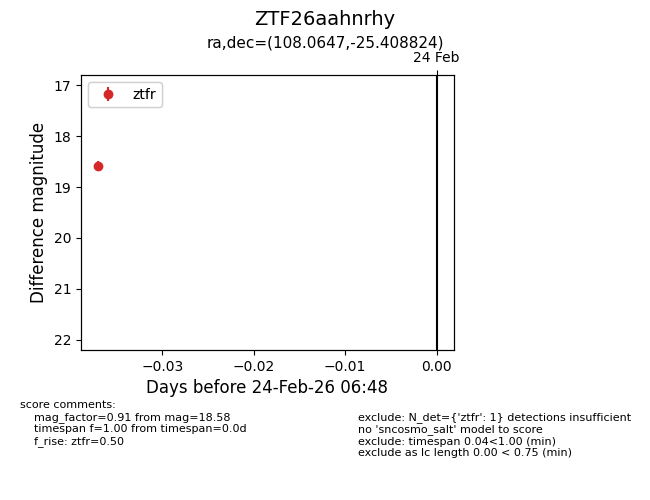
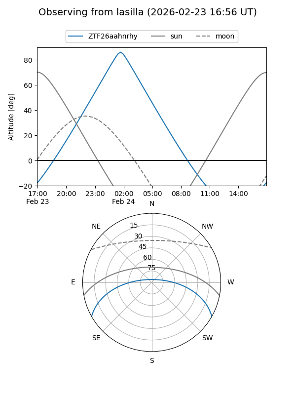
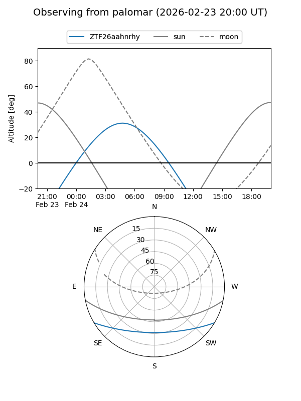

ZTF26aahnrhy
Target ZTF26aahnrhy at 2026-02-24 09:08
Aliases and brokers:
FINK: link
Lasair: link
ALeRCE: link
alt names
ZTF26aahnrhy (ztf,fink_ztf)
Coordinates:
equatorial (ra, dec) = 108.0647,-25.40882
equatorial (HMS+DMS) = 07:12:15.54,-25:24:31.76
galactic (l, b) = (237.9201,-7.04900)
Flags:
Photometry:
last ztfr=18.58
1 ztfr detections
Lightcurve

Visibility


Additional plots